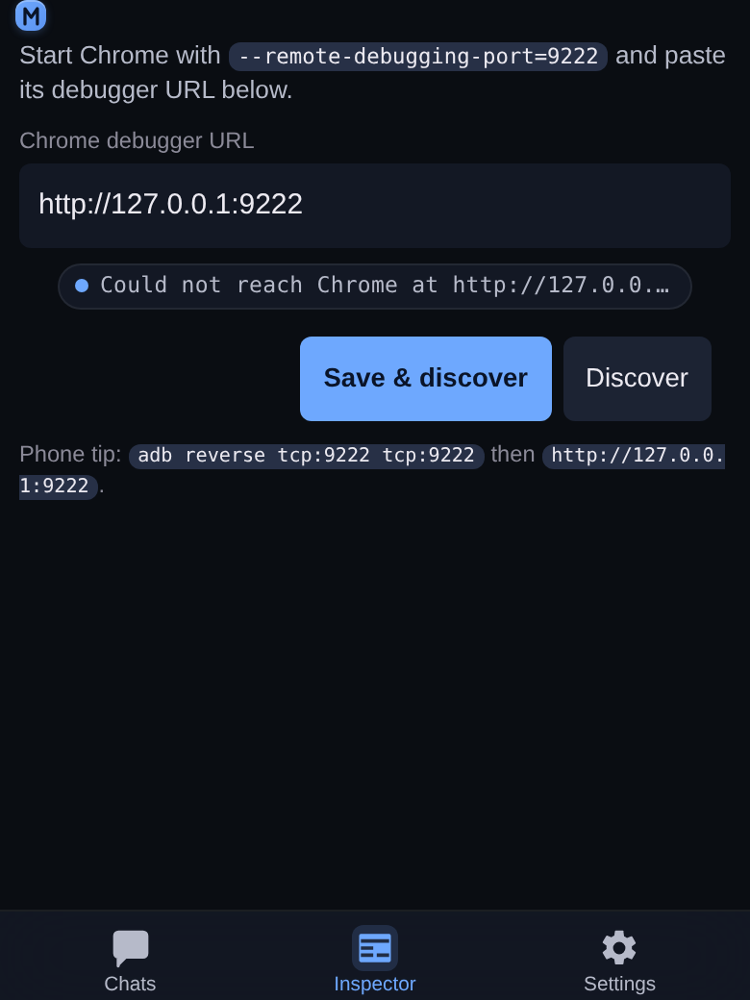

Mobile-first AI coding assistant
mouaif
Run an AI coding workspace for your local projects, connect the model providers you choose, and control which tools the assistant may use.
See it on a phone
Every screen is built for a 360–430 px viewport first and grows from there. These are captures of the running app at 390 px wide.
The Chats tab at 390 px: one project card holding its own chat list, with a New chat button under it.

The Settings tab at 390 px: a Providers section, then the app defaults that apply to every project.

The Inspector tab at 390 px while no Chrome debugger is attached: a debugger URL field, the Discover button and the connection state.

Install and run
git clone <repo-url>
cd mouaif
npm install
npm link
mouaif serveOpen http://127.0.0.1:5732/, add a project folder, connect a provider in Settings → Providers, and create your first chat.
Protect app access
Generate an expiring setup link, QR code, and short code:
mouaif serve --auth-setupOr set a user while keeping the password out of shell history:
MOUAIF_PASSWORD='a-long-password' \
mouaif serve --auth --user aliceWhat you can do
- Organize chats by local project and choose models per chat.
- Let the assistant read and edit files, run approved commands, track tasks, and delegate to agents.
- Connect extra tools through MCP.
- Preview and inspect browser pages from the mobile-friendly Inspector.
- Use Draft Craft to add selected code or an annotated Inspector image to any chat draft.
- Control every tool with Off, Ask, or Allow permissions.